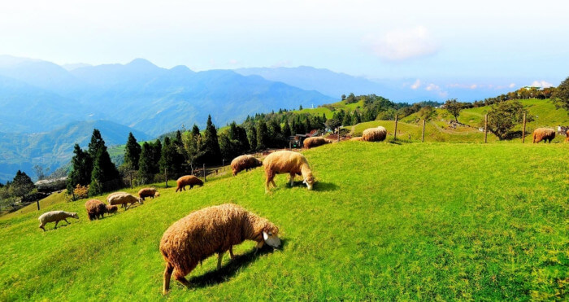

清境農場
農場介紹
清境農場四季景致秀麗，各有趣味，漫步其中可盡覽清境之美：碧湖映壽、步步高升、慈雲獻壽、青青草原、果林飄香、心誠則靈，不妨細細品味高山原野自然恬靜的氣氛。
廣義的清境，包含退輔會清境農場及周邊地區，南起霧社，北至梅峰，省道台14甲線貫穿其間，青青草原、觀山牧區、步步高升至小瑞士花園為主要賞景與遊憩動線。
活動介紹
- 綿羊秀
- 馬術秀
清境農場四季景致秀麗，各有趣味，漫步其中可盡覽清境之美：碧湖映壽、步步高升、慈雲獻壽、青青草原、果林飄香、心誠則靈，不妨細細品味高山原野自然恬靜的氣氛。
廣義的清境，包含退輔會清境農場及周邊地區，南起霧社，北至梅峰，省道台14甲線貫穿其間，青青草原、觀山牧區、步步高升至小瑞士花園為主要賞景與遊憩動線。